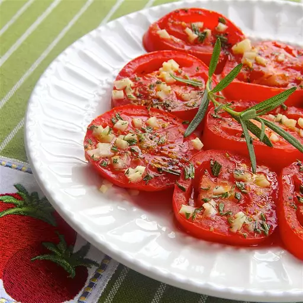

Baked Tomato Slices
Home Page

Description
A dish so appetizing that can be made from your leftover pasta!
Ingredients
- 2 tablespoons olive oil, divided, or as needed
- 1 large tomato, cut into 1/2-inch-thick-slices
- 1 sprig fresh rosemary, leaves stripped and finely chopped
- 1 clove garlic, minced
- salt and ground black pepper to taste